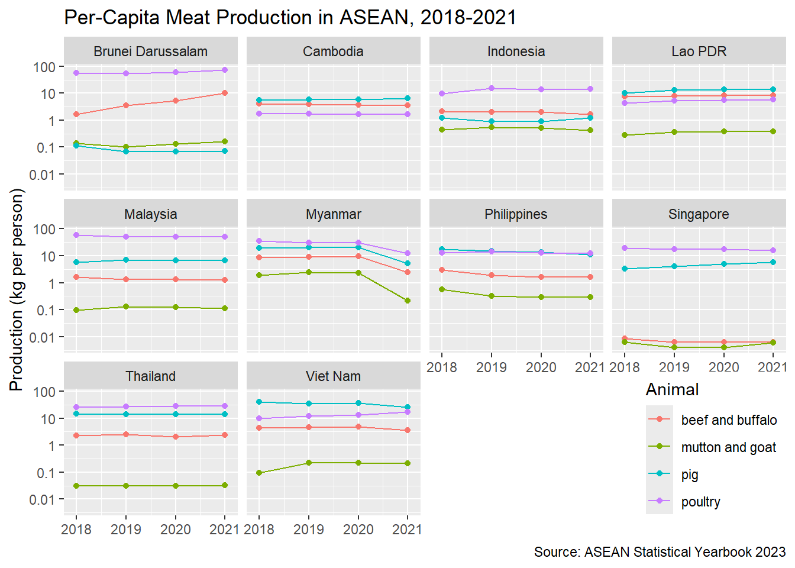

library(tidyverse)
library(readxl)
library(waldo)CSC3107 Tidyverse Lab: ASEAN Per-Capita Meat Production
Group Assignment 3
Setup
Only tidyverse, readxl, and waldo are loaded. The workbook and reference files are read with project-relative paths.
Team Roles
Joshua- Coder: typed and edited the canonical QMD, kept file paths project-relative, and checked that code chunks run.Benjamin- Navigator: tracked the task requirements, checked that all required questions were attempted, and guided the transformation strategy.MeiYuen- Verifier: checked row counts, column classes, units, missing values, join behavior, and reference comparisons.Dannon- Constructive Critic + Reporter: reviewed the report structure, explanations, style, and final submission checklist.Joshua- AI Liaison: kept the AI interaction log and reviewed AI suggestions against the assignment rules.
No late arrivals or role changes were recorded.
3.1 Think Before Prompting
Before using AI, the team expected the tidy meat table to have one row for each country, animal type, and year. The columns and classes should be:
| Column | Class | Example value |
|---|---|---|
country |
character | "Brunei Darussalam" |
animal |
character | "beef and buffalo" |
year |
numeric | 2021 |
production |
numeric | 4.26741 |
The expected number of rows is 10 countries * 4 animal types * 4 years = 160 rows.
Sheet X.14 is not tidy because years are stored as section rows such as 2021, 2020, 2019, and 2018 instead of values in a year column. Countries are spread across many columns, so the country variable is encoded in column headers. The row labels also mix real animal categories with grouping and subtotal rows such as Livestock production, Poultry production, and Total meat production. The sheet also includes presentation material such as title, unit, source, and note rows near the data.
The team predicted that poultry and pig meat would dominate many per-capita values because these are common meats and can usually be produced at larger scale than cattle, sheep, or goats. We also expected Singapore to have low domestic production per resident because of its limited land area and dependence on food imports.
3.2 Import the ASEAN Meat Production Data
The relevant meat production table is on sheet X.14. The selected range keeps the country-level table and ASEAN aggregate column while excluding title rows and source notes.
meat_raw <- read_xlsx(
"ASEAN-Statistical-Yearbook-2023.xlsx",
sheet = "X.14",
range = "A4:L36"
)
meat_raw# A tibble: 32 × 12
`Animal Type` `Brunei Darussalam` Cambodia Indonesia `Lao PDR` Malaysia
<chr> <dbl> <dbl> <dbl> <dbl> <dbl>
1 2021 NA NA NA NA NA
2 Livestock producti… NA NA NA NA NA
3 Beef and Buffalo M… 4.27 59.5 459. 61.3 40.8
4 Pig meat 0.0314 107. 324. 102. 219.
5 Mutton and Goat Me… 0.0709 0 118. 2.83 3.62
6 Poultry production 0 0 0 0 0
7 Poultry meat 31.6 27.8 3889. 43.2 1625.
8 Total meat product… 36.0 195. 4789. 209. 1889.
9 2020 0 0 0 0 0
10 Livestock producti… 0 0 0 0 0
# ℹ 22 more rows
# ℹ 6 more variables: Myanmar <dbl>, Philippines <dbl>, Singapore <dbl>,
# Thailand <dbl>, `Viet Nam` <dbl>, ASEAN <dbl>3.3 Tidy the Meat Production Data
The year rows are filled down, subtotal rows are removed, the ASEAN aggregate column is dropped, and the country columns are pivoted into one country column.
meat_tidy_uncorrected <- meat_raw |>
rename(animal = `Animal Type`) |> # Renames Animal Type to animal
select(-ASEAN) |> # Drop ASEAN column
# Creates new column `year`
mutate(year = as.numeric(str_extract(animal, "^\\d{4}$"))) |>
fill(year) |>
# Drop all rows under animal that does not match the following:
filter(animal %in% c(
"Beef and Buffalo Meat",
"Mutton and Goat Meat",
"Pig meat",
"Poultry meat"
)) |>
# Convert all remaining columns except animal and year and turns them into country and production
pivot_longer(
cols = -c(animal, year),
names_to = "country",
values_to = "production"
) |>
# Convert animal values to lower-case and match new states
mutate(
animal = recode(
animal,
"Beef and Buffalo Meat" = "beef and buffalo",
"Mutton and Goat Meat" = "mutton and goat",
"Pig meat" = "pig",
"Poultry meat" = "poultry"
),
production = as.numeric(production)
) |>
# Sorting rows in descending order by year, breaking ties with animal and country
select(country, animal, year, production) |>
arrange(desc(year), animal, country)
print(head(meat_tidy_uncorrected))# A tibble: 6 × 4
country animal year production
<chr> <chr> <dbl> <dbl>
1 Brunei Darussalam beef and buffalo 2021 4.27
2 Cambodia beef and buffalo 2021 59.5
3 Indonesia beef and buffalo 2021 459.
4 Lao PDR beef and buffalo 2021 61.3
5 Malaysia beef and buffalo 2021 40.8
6 Myanmar beef and buffalo 2021 137. print(tail(meat_tidy_uncorrected))# A tibble: 6 × 4
country animal year production
<chr> <chr> <dbl> <dbl>
1 Malaysia poultry 2018 1873.
2 Myanmar poultry 2018 1896.
3 Philippines poultry 2018 1380.
4 Singapore poultry 2018 107.
5 Thailand poultry 2018 1780.
6 Viet Nam poultry 2018 947.Verifier Check: the tidy table has 160 rows, four columns, and exactly the four required animal labels.
meat_tidy_uncorrected |>
summarise(
rows = n(),
columns = ncol(meat_tidy_uncorrected),
animals = str_c(sort(unique(animal)), collapse = ", ")
)# A tibble: 1 × 3
rows columns animals
<int> <int> <chr>
1 160 4 beef and buffalo, mutton and goat, pig, poultry3.4 Correct Cambodia’s Mutton-and-Goat Entries
Cambodia’s mutton-and-goat entries are coded as 0 in the XLSX export, but the PDF source marks those values as unavailable. Treating unavailable data as true zero production would bias the per-capita result downward, so the correction is limited to the four affected observations: Cambodia, mutton and goat, and years 2018 through 2021.
meat_tidy <- meat_tidy_uncorrected |>
mutate(
production = if_else(
country == "Cambodia" &
animal == "mutton and goat" &
year %in% 2018:2021 &
production == 0,
NA_real_,
production
)
)
# Replaces all 0 elements under Cambodia's mutton and goat section with NA, else we retain the original production value
meat_tidy |>
filter(country == "Cambodia", animal == "mutton and goat")# A tibble: 4 × 4
country animal year production
<chr> <chr> <dbl> <dbl>
1 Cambodia mutton and goat 2021 NA
2 Cambodia mutton and goat 2020 NA
3 Cambodia mutton and goat 2019 NA
4 Cambodia mutton and goat 2018 NAVerifier Check: the verifier used a different approach with the
$operator and compared the result to the Coder’s corrected table.
meat_tidy_verifier <- meat_tidy_uncorrected
meat_tidy_verifier$production[
meat_tidy_verifier$country == "Cambodia" &
meat_tidy_verifier$animal == "mutton and goat" &
meat_tidy_verifier$year %in% 2018:2021 &
meat_tidy_verifier$production == 0
] <- NA_real_
compare(meat_tidy, meat_tidy_verifier, tolerance = 1e-6)✔ No differencesThe first and last six rows after correction confirm the requested ordering.
print(head(meat_tidy))# A tibble: 6 × 4
country animal year production
<chr> <chr> <dbl> <dbl>
1 Brunei Darussalam beef and buffalo 2021 4.27
2 Cambodia beef and buffalo 2021 59.5
3 Indonesia beef and buffalo 2021 459.
4 Lao PDR beef and buffalo 2021 61.3
5 Malaysia beef and buffalo 2021 40.8
6 Myanmar beef and buffalo 2021 137. print(tail(meat_tidy))# A tibble: 6 × 4
country animal year production
<chr> <chr> <dbl> <dbl>
1 Malaysia poultry 2018 1873.
2 Myanmar poultry 2018 1896.
3 Philippines poultry 2018 1380.
4 Singapore poultry 2018 107.
5 Thailand poultry 2018 1780.
6 Viet Nam poultry 2018 947.3.5 Checkpoint: Compare meat_tidy to Reference Data
meat_ref <- read_csv("meat_tidy_reference.csv", show_col_types = FALSE)
compare(meat_tidy, meat_ref, tolerance = 1e-6)✔ No differences3.6 Tidy the Population Data
The population table is on sheet I.1. The range excludes the ASEAN aggregate row.
pop_raw <- read_xlsx(
"ASEAN-Statistical-Yearbook-2023.xlsx",
sheet = "I.1",
range = "A5:K15"
)
pop_raw# A tibble: 10 × 11
Country `2013` `2014` `2015` `2016` `2017` `2018` `2019` `2020` `2021` `2022`
<chr> <dbl> <dbl> <dbl> <dbl> <dbl> <dbl> <dbl> <dbl> <dbl> <dbl>
1 Brunei… 4.06e2 4.12e2 4.12e2 4.17e2 4.21e2 4.42e2 4.60e2 4.54e2 4.30e2 4.45e2
2 Cambod… 1.47e4 1.49e4 1.52e4 1.55e4 1.57e4 1.60e4 1.61e4 1.63e4 1.66e4 1.68e4
3 Indone… 2.49e5 2.52e5 2.56e5 2.58e5 2.61e5 2.64e5 2.67e5 2.70e5 2.72e5 2.76e5
4 Lao PDR 6.64e3 6.81e3 6.67e3 6.79e3 6.90e3 7.01e3 7.12e3 7.26e3 7.34e3 7.44e3
5 Malays… 3.02e4 3.07e4 3.12e4 3.16e4 3.20e4 3.24e4 3.25e4 3.24e4 3.26e4 3.27e4
6 Myanmar 5.12e4 5.20e4 5.25e4 5.29e4 5.34e4 5.39e4 5.43e4 5.48e4 5.53e4 5.58e4
7 Philip… 9.82e4 9.99e4 1.02e5 1.03e5 1.05e5 1.06e5 1.07e5 1.09e5 1.10e5 1.12e5
8 Singap… 5.40e3 5.47e3 5.54e3 5.61e3 5.61e3 5.64e3 5.70e3 5.69e3 5.45e3 5.64e3
9 Thaila… 6.68e4 6.70e4 6.72e4 6.75e4 6.77e4 6.78e4 6.56e4 6.54e4 6.52e4 6.61e4
10 Viet N… 9.02e4 9.12e4 9.22e4 9.33e4 9.43e4 9.54e4 9.65e4 9.76e4 9.85e4 9.95e4pop_tidy <- pop_raw |>
rename(country = Country) |>
pivot_longer(
cols = -country,
names_to = "year",
values_to = "pop"
) |>
mutate(
year = as.numeric(year),
pop = as.numeric(pop)
) |>
select(country, year, pop) |>
arrange(desc(year), country)
pop_tidy# A tibble: 100 × 3
country year pop
<chr> <dbl> <dbl>
1 Brunei Darussalam 2022 445.
2 Cambodia 2022 16843.
3 Indonesia 2022 275720.
4 Lao PDR 2022 7443.
5 Malaysia 2022 32698.
6 Myanmar 2022 55770.
7 Philippines 2022 111572.
8 Singapore 2022 5637.
9 Thailand 2022 66090
10 Viet Nam 2022 99462.
# ℹ 90 more rowsVerifier Check: if
trim_ws = FALSE, the raw workbook preserves the trailing space in"Malaysia ". The defaultread_xlsx()setting istrim_ws = TRUE, sopop_tidy$countrycontains"Malaysia"without the trailing space.
pop_raw_no_trim <- read_xlsx(
"ASEAN-Statistical-Yearbook-2023.xlsx",
sheet = "I.1",
range = "A5:K15",
trim_ws = FALSE
)
pop_raw_no_trim |>
filter(str_detect(Country, "Malaysia")) |>
transmute(country = Country, characters = nchar(Country))# A tibble: 1 × 2
country characters
<chr> <int>
1 "Malaysia " 9pop_tidy |>
filter(country == "Malaysia") |>
distinct(country) |>
mutate(characters = nchar(country))# A tibble: 1 × 2
country characters
<chr> <int>
1 Malaysia 83.7 Checkpoint: Compare pop_tidy to Reference Data
pop_ref <- read_csv("population_tidy_reference.csv", show_col_types = FALSE)
compare(pop_tidy, pop_ref, tolerance = 1e-6)✔ No differences3.8 Join Meat Production to Population
A left join preserves every row and the row order of meat_tidy while adding population values for matching countries and years.
merged <- meat_tidy |>
# Using left_join to preserve every row of meat_tidy
left_join(pop_tidy, by = c("country", "year")) |>
select(country, animal, year, production, pop)
merged# A tibble: 160 × 5
country animal year production pop
<chr> <chr> <dbl> <dbl> <dbl>
1 Brunei Darussalam beef and buffalo 2021 4.27 430.
2 Cambodia beef and buffalo 2021 59.5 16592.
3 Indonesia beef and buffalo 2021 459. 272248.
4 Lao PDR beef and buffalo 2021 61.3 7338.
5 Malaysia beef and buffalo 2021 40.8 32576.
6 Myanmar beef and buffalo 2021 137. 55295.
7 Philippines beef and buffalo 2021 183. 110198
8 Singapore beef and buffalo 2021 0.0342 5454.
9 Thailand beef and buffalo 2021 155. 65213.
10 Viet Nam beef and buffalo 2021 348. 98506.
# ℹ 150 more rowsVerifier Check: the ordering of the joined table is the same as the ordering of
meat_tidy.
identical(
merged |> select(country, animal, year, production),
meat_tidy
)[1] TRUE3.9 Derive Per-Capita Production
Both source variables are stored in thousands, so kilograms per person is calculated as production / pop * 1000.
merged <- merged |>
mutate(meat_per_cap = production / pop * 1000)
merged# A tibble: 160 × 6
country animal year production pop meat_per_cap
<chr> <chr> <dbl> <dbl> <dbl> <dbl>
1 Brunei Darussalam beef and buffalo 2021 4.27 430. 9.92
2 Cambodia beef and buffalo 2021 59.5 16592. 3.59
3 Indonesia beef and buffalo 2021 459. 272248. 1.69
4 Lao PDR beef and buffalo 2021 61.3 7338. 8.35
5 Malaysia beef and buffalo 2021 40.8 32576. 1.25
6 Myanmar beef and buffalo 2021 137. 55295. 2.48
7 Philippines beef and buffalo 2021 183. 110198 1.66
8 Singapore beef and buffalo 2021 0.0342 5454. 0.00628
9 Thailand beef and buffalo 2021 155. 65213. 2.37
10 Viet Nam beef and buffalo 2021 348. 98506. 3.53
# ℹ 150 more rowsVerifier Check: the verifier independently recalculated
meat_per_capwith the$operator.
merged_verifier <- merged |>
select(-meat_per_cap)
merged_verifier$meat_per_cap <-
merged_verifier$production / merged_verifier$pop * 1000
compare(merged$meat_per_cap, merged_verifier$meat_per_cap, tolerance = 1e-6)✔ No differences3.10 Checkpoint: Compare merged to Reference Data
merged_ref <- read_csv("merged_reference.csv", show_col_types = FALSE)
compare(merged, merged_ref, tolerance = 1e-6)✔ No differences3.11 Visualize the Result
ggplot(
merged,
aes(x = year, y = meat_per_cap, color = animal)
) +
geom_line() +
geom_point() +
labs(
x = NULL,
y = "Production (kg per person)",
color = "Animal",
title = "Per-Capita Meat Production in ASEAN, 2018-2021",
caption = "Source: ASEAN Statistical Yearbook 2023"
) +
xlim(2017.9, 2021.1) +
scale_y_log10(
breaks = c(0.01, 0.1, 1, 10, 100),
labels = c("0.01", "0.1", "1", "10", "100")
) +
facet_wrap(~country) +
theme(
legend.position = "inside",
legend.position.inside = c(1, 0),
legend.justification.inside = c(1, 0.05)
)
4.1 Reflect on AI Use
Tool used: ChatGPT Desktop App.
One useful AI suggestion was to use read_xlsx() ranges that start at the actual table headers, then use pivot_longer() after filling the year rows. This was accepted after checking the workbook and confirming that the resulting meat_tidy, pop_tidy, and merged tables matched the three reference CSV files.
One AI limitation was that an early draft suggested wrapping compare() output in a custom "No differences found." message. That was revised because the task sheet specifically asks for direct waldo::compare() checkpoints that print the standard no-differences message.
This reflection was checked against the available ai_log.md before submission. The team should replace the reconstructed response text in the log if a full exported transcript becomes available.
4.5 Packaging Checklist
- The final QMD renders without errors.
- The rendered HTML file is included.
ai_log.mdis included and has been reviewed against the actual chat transcript.ASEAN-Statistical-Yearbook-2023.xlsxis included.meat_tidy_reference.csv,population_tidy_reference.csv, andmerged_reference.csvare included.- All file paths in the QMD are project-relative.
- Every code chunk has a unique label.
- The three
compare()checkpoints show no differences. - The final archive is named
team-SteelBlue-tidyverse-lab.zip, using the team identifier recorded in the AI log.
3.12 Comment on the Plot
The plot should be read as domestic production per resident, not direct meat consumption, because imports and exports are not included. One notable pattern is that poultry is often the highest per-capita meat category, while Singapore is low across all meat types. This is consistent with broader meat-market evidence from the OECD-FAO Agricultural Outlook 2025-2034, which says productivity gains have been greater in pig and poultry production than in cattle and sheep, and that lower relative prices support demand for non-ruminant meats.1
Singapore’s low domestic production is also consistent with Singapore government food-policy material stating that Singapore imports more than 90% of its food.2